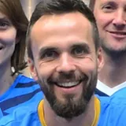

Hall of Fame TFC Luzern
Alle Podestplätze der Spieler, die heute eine Lizenz beim TFC Luzern haben. Such deinen Namen und sieh nach, was du geholt hast.
413Podestplätze holten die Spieler des TFC Luzern
Gezählt sind die Schweizermeisterschaft, die Nati, die Jahresranglisten, die Clubliga, die Fordere-Liga Luzern und die Turniere je Person. Clubliga-Plätze ohne belegten Kader zählen je Team. 27 Personen stehen auf dem Podest, von 37 Spielern mit Lizenz.
Dazu kommen 6 Teilnahmen an der Champions League. Sie stehen weiter unten und zählen in keine Summe.
Quelle: Schweizer Verband, Coral, tablesoccer.org, FAST (ITSF), players4players.de und fordere.ch, abgerufen am 21. November 2026.
- Gold
- 159 Rang 1
- Silber
- 111 Rang 2
- Bronze
- 143 Rang 3
Wer auf dem Podest stand
28 Personen stehen in der Rangliste, geordnet nach Podestplätzen, bei Gleichstand nach Gold. Oben stehen die festen Plätze. Das Ehrenmitglied zählt in keine Summe. Die Clubliga zählt je Person, wenn der Kader belegt ist, sonst je Team. Alle Teams stehen darunter.
- 1

Vasco Oliveira
Ehrenmitglied, zählt in keine SummeIch bin Erster, weil ichs kann.
8 Podestplätze ansehen
- 2026P4P, Swiss Open 2026, Neulinge EinzelGoldQuelle
- 2026Verbandsturnier, STRT Zürich - OD - 2026/01, Open DoublesGoldQuelle auf Coral
- 2025Verbandsturnier, STRT26 - TFC Zürich - OD - Herbst Tour, Open DoublesBronzeQuelle auf Coral
- 2025Verbandsturnier, STRT Zürich - OD - 2025/10 - Leonhart, Open DoublesBronzeQuelle auf Coral
- 2024Verbandsturnier, STRT TFCZ, Open DoublesSilberQuelle
- 2018/19Fordere-Liga Luzern, 1. Liga GarlandoSilberRohdaten fordere.ch (JSON)
- 2017Verbandsturnier, Fordere.ch STS-Turnier, Neuling DoppelGoldQuelle
- 2017Verbandsturnier, Swiss Garlando Finals, Neulinge DoppelBronzeQuelle
8Podestplätze - 2
Jorge Rodriguez
Aktueller Weltmeister im Fussball.
7 Podestplätze ansehen
- 2026Clubliga, Super League, TFC Luzern 1GoldQuelle auf Coral
- 2025Clubliga, Super League, TFC Luzern 1GoldQuelle auf Coral
- 2024Clubliga, Super League, TFC Luzern 1GoldQuelle
- 2024Verbandsturnier, STRT Zürich, Open DoublesSilberQuelle
- 2018/19Fordere-Liga Luzern, 1. Liga GarlandoGoldRohdaten fordere.ch (JSON)
- 2017Clubliga, Super League, TFC LuzernGoldQuelle
- 2017Verbandsturnier, Simmental Open 2017, DYPBronzeQuelle
7Podestplätze - 3
Hannes Wallimann
Schweizer Meister Herren Doppel, 7×
106 Podestplätze ansehen
- 2026Clubliga, Super League, TFC Luzern 1GoldQuelle auf Coral
- 2026Verbandsturnier, STRT - TFC Zürich - OD - 2026/06, Open DoublesGoldQuelle auf Coral
- 2026Verbandsturnier, STS26 - Luzern - Jahreseröffnungsturnier, Open DoublesGoldQuelle auf Coral
- 2026Verbandsturnier, STS26 - Zürich - ITSF 250, Open DoublesBronzeQuelle auf Coral
- 2025Clubliga, Super League, TFC Luzern 1GoldQuelle auf Coral
- 2025Verbandsturnier, STS Teufenthal - 2025/06 - ITSF 500 WT 2025, Open DoublesGoldQuelle auf Coral
- 2025Verbandsturnier, STS Luzern (Rothenburg) - 2025/02, Open SinglesGoldQuelle auf Coral
- 2025Schweizermeisterschaft, Herren DoppelSilberQuelle beim Verband
- 2024Clubliga, Super League, TFC Luzern 1GoldQuelle
- 2024Schweizermeisterschaft, Herren DoppelGoldQuelle beim Verband
- 2024Verbandsturnier, STRT Bern, Open DoublesGoldQuelle auf Coral
- 2024ITSF-Turnier, STS Teufenthal Open - ITSF 250 WT 2024, Open DoublesGoldQuelle in FAST (ITSF)
- 2024ITSF-Turnier, Swiss Tablesoccer Series 2024 Rothenburg - ITSF 250 WT 2024, Open DoublesGoldQuelle in FAST (ITSF)
- 2024Verbandsturnier, Swiss Tablesoccer Serie (STS) Jura, Open DoublesSilberQuelle
- 2024Verbandsturnier, STRT Zürich, Open DoublesSilberQuelle
- 2024Nati Herren, World Series GarlandoBronzeQuelle auf Coral
- 2024Jahresrangliste, Open DoppelBronzeQuelle
- 2024Verbandsturnier, Swiss Tablesoccer Serie (STS) Simmental, Open DoublesBronzeQuelle
- 2023Verbandsturnier, STRT Seetal, Open DoublesGoldQuelle
- 2023ITSF-Turnier, Swiss Tablesoccer Series Riggisberg - ITSF Master Tour 2023, Open DoublesGoldQuelle in FAST (ITSF)
- 2023ITSF-Turnier, Swiss Tablesoccer Series St. Gallen - ITSF Pro Tour 2023, Open DoublesGoldQuelle in FAST (ITSF)
- 2023Verbandsturnier, Swiss Tablesoccer Serie (STS) Jura, MixedGoldQuelle
- 2023Verbandsturnier, Swiss Tablesoccer Serie (STS) Jura, Open DoublesGoldQuelle
- 2023ITSF-Turnier, Jahreseröffnungsturnier 2023 Luzern - ITSF Master Tour 2023, Open DoublesGoldQuelle in FAST (ITSF)
- 2023ITSF-Turnier, Jahreseröffnungsturnier 2023 Luzern - ITSF Master Tour 2023, Open SinglesGoldQuelle in FAST (ITSF)
- 2023Verbandsturnier, STRT Bern, Offenes DoppelSilberQuelle
- 2023Verbandsturnier, STRT Seetal, Mixed DoublesSilberQuelle
- 2023World Series, World Series by Garlando 2023, Open DoublesSilberQuelle in FAST (ITSF)
- 2023Schweizermeisterschaft, Herren EinzelBronzeQuelle beim Verband
- 2022Schweizermeisterschaft, Herren DoppelGoldQuelle beim Verband
- 2022Verbandsturnier, Swiss Tablesoccer Serie (STS) Gelterkinden, Open SingleGoldQuelle
- 2022ITSF-Turnier, Swiss Tablesoccer Series Liestal - ITSF Master Tour 2022, Mixed DoublesGoldQuelle in FAST (ITSF)
- 2022ITSF-Turnier, Swiss Tablesoccer Series Liestal - ITSF Master Tour 2022, Open SinglesGoldQuelle in FAST (ITSF)
- 2022Verbandsturnier, Swiss Tablesoccer Serie (STS) St. Gallen, Open DoublesGoldQuelle
- 2022ITSF-Turnier, Swiss Tablesoccer Series Riggisberg - ITSF Pro Tour 2022, Open DoublesGoldQuelle in FAST (ITSF)
- 2022ITSF-Turnier, Jahreseröffnungsturnier 2022 Luzern - ITSF Pro Tour 2022, Open DoublesGoldQuelle in FAST (ITSF)
- 2022ITSF-Turnier, Jahreseröffnungsturnier 2022 Luzern - ITSF Pro Tour 2022, Open SinglesSilberQuelle in FAST (ITSF)
- 2022Schweizermeisterschaft, Herren EinzelBronzeQuelle beim Verband
- 2022World Series, World Series by Garlando 2022, Open SinglesBronzeQuelle in FAST (ITSF)
- 2021Schweizermeisterschaft, Herren DoppelGoldQuelle beim Verband
- 2021ITSF-Turnier, STS Riggisberg - ITSF Master Tour 2021, Open DoublesBronzeQuelle in FAST (ITSF)
- 2021ITSF-Turnier, STS Liestal - ITSF Master Tour 2021, Open DoublesBronzeQuelle in FAST (ITSF)
- 2020Verbandsturnier, STRT Tablesoccer beider Basel, Open DoublesSilberQuelle
- 2020ITSF-Turnier, Jahreseröffnungsturnier 2020, Open SinglesBronzeQuelle in FAST (ITSF)
- 2019Schweizermeisterschaft, Herren DoppelGoldQuelle beim Verband
- 2019ITSF-Turnier, Gams Open 2019, Open DoublesGoldQuelle in FAST (ITSF)
- 2019ITSF-Turnier, Simmental Open 2019, Mixed DoublesGoldQuelle in FAST (ITSF)
- 2019ITSF-Turnier, Riggisberg Open 2019, Mixed DoublesGoldQuelle in FAST (ITSF)
- 2019ITSF-Turnier, Riggisberg Open 2019, Open SinglesGoldQuelle in FAST (ITSF)
- 2019ITSF-Turnier, Saisoneröffnungsturnier 2019, Open DoublesGoldQuelle in FAST (ITSF)
- 2019Schweizermeisterschaft, Herren EinzelSilberQuelle beim Verband
- 2019ITSF-Turnier, Simmental Open 2019, Open DoublesSilberQuelle in FAST (ITSF)
- 2019World Series, World Series by Garlando 2019, Mixed DoublesSilberQuelle in FAST (ITSF)
- 2019World Series, World Series by Garlando 2019, Open DoublesSilberQuelle in FAST (ITSF)
- 2019ITSF-Turnier, Saisoneröffnungsturnier 2019, Open SinglesBronzeQuelle in FAST (ITSF)
- 2018Schweizermeisterschaft, Herren DoppelGoldQuelle beim Verband
- 2018ITSF-Turnier, Buchs Pro Tour, Open DoublesGoldQuelle in FAST (ITSF)
- 2018ITSF-Turnier, Simmental Open 2018, Open DoublesGoldQuelle in FAST (ITSF)
- 2018ITSF-Turnier, Simmental Open 2018, Open SinglesGoldQuelle in FAST (ITSF)
- 2018World Series, World Series by Garlando 2018, Mixed DoublesGoldQuelle in FAST (ITSF)
- 2018ITSF-Turnier, Haldenstein Masters 2018, Open DoublesGoldQuelle in FAST (ITSF)
- 2018ITSF-Turnier, Haldenstein Masters 2018, Open SinglesGoldQuelle in FAST (ITSF)
- 2018Verbandsturnier, Swiss Foos Finals, Herren DoppelGoldQuelle
- 2018Verbandsturnier, Regio Tour TC Emmental, Open DoublesSilberQuelle
- 2018ITSF-Turnier, Goldach Pro Tour 2018, Open DoublesSilberQuelle in FAST (ITSF)
- 2018ITSF-Turnier, Goldach Pro Tour 2018, Open SinglesSilberQuelle in FAST (ITSF)
- 2018Verbandsturnier, Swiss Foos Finals, Herren EinzelSilberQuelle
- 2018World Series, World Series by Garlando 2018, Classic Open DoublesBronzeQuelle in FAST (ITSF)
- 2017Clubliga, Super League, TFC LuzernGoldQuelle
- 2017Schweizermeisterschaft, Herren DoppelGoldQuelle beim Verband
- 2017Verbandsturnier, Swiss Garlando Finals, Offenes DoppelGoldQuelle
- 2017ITSF-Turnier, Simmental Open 2017, Open SinglesGoldQuelle in FAST (ITSF)
- 2017ITSF-Turnier, Czech Leonhart Championship 2017, Saturday DYPGoldQuelle in FAST (ITSF)
- 2017Schweizermeisterschaft, Herren EinzelSilberQuelle beim Verband
- 2017ITSF-Turnier, Austrian National Championships 2017, Open DoublesSilberQuelle in FAST (ITSF)
- 2017ITSF-Turnier, Austrian National Championships 2017, Open SinglesSilberQuelle in FAST (ITSF)
- 2017ITSF-Turnier, Simmental Open 2017, Open DoublesSilberQuelle in FAST (ITSF)
- 2017World Series, World Series by Garlando - 2017, Mixed DoublesSilberQuelle in FAST (ITSF)
- 2017World Series, World Series by Leonhart - 2017, Mixed DoublesBronzeQuelle in FAST (ITSF)
- 2017ITSF-Turnier, Copenhagen Open 2017, Open SinglesBronzeQuelle in FAST (ITSF)
- 2017ITSF-Turnier, Lucerne Pro Tour 2017, Open DoublesBronzeQuelle in FAST (ITSF)
- 2016Schweizermeisterschaft, Herren Doppel (Event 2)GoldQuelle beim Verband
- 2016Schweizermeisterschaft, Mixed (Event 1)GoldQuelle beim Verband
- 2016ITSF-Turnier, Simmental Pro Tour 2016, Open SinglesGoldQuelle in FAST (ITSF)
- 2016World Series, World Series by Garlando - 2016, Mixed DoublesGoldQuelle in FAST (ITSF)
- 2016ITSF-Turnier, TSS Goldach Pro Tour - 2016, Open DoublesGoldQuelle in FAST (ITSF)
- 2016World Series, World Series by Garlando - 2016, Open DoublesSilberQuelle in FAST (ITSF)
- 2016Schweizermeisterschaft, Herren Einzel (Event 2)BronzeQuelle beim Verband
- 2016Schweizermeisterschaft, Mixed (Event 2)BronzeQuelle beim Verband
- 2016ITSF-Turnier, Simmental Pro Tour 2016, Open DoublesBronzeQuelle in FAST (ITSF)
- 2016ITSF-Turnier, TSS Goldach Pro Tour - 2016, Open SinglesBronzeQuelle in FAST (ITSF)
- 2015ITSF-Turnier, Tablesoccer Switzerland Pro Tour - 2015, Open SinglesGoldQuelle in FAST (ITSF)
- 2015ITSF-Turnier, Danube Open - 2015, Open SinglesSilberQuelle in FAST (ITSF)
- 2015World Series, Garlando WCS - 2015, Doubles - PBronzeQuelle in FAST (ITSF)
- 2015ITSF-Turnier, Danube Open - 2015, Open DoublesBronzeQuelle in FAST (ITSF)
- 2014ITSF-Turnier, Thun Pro Tour - 2014, Open SinglesGoldQuelle in FAST (ITSF)
- 2014Schweizermeisterschaft, Herren DoppelSilberQuelle beim Verband
- 2014ITSF-Turnier, Thun Pro Tour - 2014, Open DoublesSilberQuelle in FAST (ITSF)
- 2014P4P, Swiss Open 2014, Pro-AmBronzeQuelle
- 2014ITSF-Turnier, Goldach Pro Tour - 2014, Open DoublesBronzeQuelle in FAST (ITSF)
- 2014P4P, Maritim Open 2014, Amateur DoppelBronzeQuelle
- 2013Schweizermeisterschaft, Herren Doppel, mit Marc BurriSilberQuelle beim Verband
- 2013Schweizermeisterschaft, MixedSilberQuelle beim Verband
- 2013P4P, Swiss Open 2013, Neulinge EinzelSilberQuelle
- 2013P4P, Deutsche Meisterschaft 2013, Amateur DoppelBronzeQuelle
- 2011P4P, Swiss Open 2011, Neulinge DoppelSilberQuelle
106Podestplätze - 4
Rayan Van Stokkum
Schweizer Meister Junioren Einzel, 3×
64 Podestplätze ansehen
- 2026Jahresrangliste, Junior EinzelGoldRohdaten tablesoccer.org (JSON)
- 2026World Series, World Series Bonzini 2026, Junior MixedGoldQuelle auf Coral
- 2026Verbandsturnier, STS26 - Luzern - Jahreseröffnungsturnier, Junior Under 19 SinglesGoldQuelle auf Coral
- 2026World Series, World Series Leonhart 2026, Junior Under 19 ClassicSilberQuelle auf Coral
- 2026World Series, World Series Bonzini 2026, Junior U19 DoublesSilberQuelle auf Coral
- 2026Verbandsturnier, STRT - TFC Zürich - OE - 2026/10, Open SinglesBronzeQuelle auf Coral
- 2026Verbandsturnier, STRT Zürich - OE - 2026/02, Open SinglesBronzeQuelle auf Coral
- 2026Verbandsturnier, STS26 - Luzern - Jahreseröffnungsturnier, Open SinglesBronzeQuelle auf Coral
- 2025Jahresrangliste, Junior EinzelGoldRohdaten tablesoccer.org (JSON)
- 2025World Series, World Series Leonhart 2025, Junior U19 DoublesGoldQuelle auf Coral
- 2025Verbandsturnier, STS Zürich (Urdorf) - 2025/03, Junior Under 19 SinglesGoldQuelle auf Coral
- 2025World Series, World Series Leonhart 2025, Junior U19 SinglesSilberQuelle auf Coral
- 2025Verbandsturnier, STS Zürich (Urdorf) - 2025/03, Junior Under 19 DoublesSilberQuelle auf Coral
- 2025ITSF-Turnier, 3. Pielachtal Leonhart Masters - ITSF 500 WT 2025, Junior SinglesSilberQuelle in FAST (ITSF)
- 2025Clubliga, Challenge League, TFCL 2BronzeQuelle auf Coral
- 2025Jahresrangliste, Junior DoppelBronzeRohdaten tablesoccer.org (JSON)
- 2025World Series, World Series Bonzini 2025, Junior U19 DoublesBronzeQuelle auf Coral
- 2025ITSF-Turnier, 3. Pielachtal Leonhart Masters - ITSF 500 WT 2025, Junior DoublesBronzeQuelle in FAST (ITSF)
- 2024Schweizermeisterschaft, Junioren DoppelGoldQuelle beim Verband
- 2024Schweizermeisterschaft, Junioren EinzelGoldQuelle beim Verband
- 2024ITSF-Turnier, Roberto Sport Prague Masters 2024 - ITSF 500 WT 2024, Junior DoublesGoldQuelle in FAST (ITSF)
- 2024ITSF-Turnier, Roberto Sport Prague Masters 2024 - ITSF 500 WT 2024, Junior SinglesGoldQuelle in FAST (ITSF)
- 2024ITSF-Turnier, London Masters - ITSF 500 WT 2024, Junior SinglesGoldQuelle in FAST (ITSF)
- 2024ITSF-Turnier, STS Richterswil Open - ITSF 500 WT 2024, Junioren U19 DoppelGoldQuelle in FAST (ITSF)
- 2024ITSF-Turnier, STS Richterswil Open - ITSF 500 WT 2024, Junioren U19 EinzelGoldQuelle in FAST (ITSF)
- 2024Nati Junioren, World Series LeonhartSilberQuelle auf Coral
- 2024World Series, World Series Garlando 2024, Junior U19 ClassicSilberQuelle auf Coral
- 2024ITSF-Turnier, Roberto Sport Prague Masters 2024 - ITSF 500 WT 2024, Open DoublesSilberQuelle in FAST (ITSF)
- 2024ITSF-Turnier, 25th Czech Rosengart Championship 2024 - ITSF 500 WT 2024, Junior DoublesSilberQuelle in FAST (ITSF)
- 2024ITSF-Turnier, Open National Hoenheim - ITSF Master Series 2024, Junior DoublesSilberQuelle in FAST (ITSF)
- 2024ITSF-Turnier, 2. Austrian Leonhart Masters - ITSF 500 WT 2024, Junior SinglesSilberQuelle in FAST (ITSF)
- 2024Clubliga, Challenge League, TFC Luzern 2BronzeQuelle
- 2024World Series, World Series Garlando 2024, Junior U19 DoublesBronzeQuelle auf Coral
- 2024ITSF-Turnier, 1. Saar Youth Trophy - ITSF 500 WT 2024, U19 DoublesBronzeQuelle in FAST (ITSF)
- 2024ITSF-Turnier, 25th Czech Rosengart Championship 2024 - ITSF 500 WT 2024, Junior SinglesBronzeQuelle in FAST (ITSF)
- 2024ITSF-Turnier, Open National Hoenheim - ITSF Master Series 2024, Junior SinglesBronzeQuelle in FAST (ITSF)
- 2023Schweizermeisterschaft, Junioren EinzelGoldQuelle beim Verband
- 2023ITSF-Turnier, 2. ITSF YOUTH MASTERS - ITSF Master Tour 2023, U19 DoublesGoldQuelle in FAST (ITSF)
- 2023ITSF-Turnier, Hungarian Leonhart Open - ITSF Master Tour 2023, U19 DoublesGoldQuelle in FAST (ITSF)
- 2023World Series, World Series by Garlando 2023, U16 Classic DoublesGoldQuelle in FAST (ITSF)
- 2023World Series, World Series by Bonzini 2023, Junior U16 DoublesGoldQuelle in FAST (ITSF)
- 2023Schweizermeisterschaft, Junioren DoppelSilberQuelle beim Verband
- 2023ITSF-Turnier, Roberto Sport Prague Masters 2023 - ITSF Master Series 2023, Junior DoublesSilberQuelle in FAST (ITSF)
- 2023World Series, World Series by Garlando 2023, U16 DoublesSilberQuelle in FAST (ITSF)
- 2023ITSF-Turnier, Swiss Tablesoccer Series Riggisberg - ITSF Master Tour 2023, Junior DoublesSilberQuelle in FAST (ITSF)
- 2023ITSF-Turnier, ITSF Youth Masters Hamburg - ITSF Master Series 2023, U16 DoublesSilberQuelle in FAST (ITSF)
- 2023ITSF-Turnier, Roberto Sport Prague Masters 2023 - ITSF Master Series 2023, Junior SinglesBronzeQuelle in FAST (ITSF)
- 2023ITSF-Turnier, Swiss Tablesoccer Series Riggisberg - ITSF Master Tour 2023, Junior SinglesBronzeQuelle in FAST (ITSF)
- 2023Verbandsturnier, Swiss Tablesoccer Serie (STS) Richterswil, Rookie DoublesBronzeQuelle
- 2022Schweizermeisterschaft, Junioren EinzelGoldQuelle beim Verband
- 2022ITSF-Turnier, Sofia Grand Masters XIII 2022 - ITSF Master Tour 2022, Junior DoublesGoldQuelle in FAST (ITSF)
- 2022Verbandsturnier, 1. Juniorenturnier TFC Freiburg-Sense, Doppel U18 & Ü18GoldQuelle
- 2022ITSF-Turnier, Swiss Tablesoccer Series Liestal - ITSF Master Tour 2022, Junior DoublesGoldQuelle in FAST (ITSF)
- 2022ITSF-Turnier, Swiss Tablesoccer Series Liestal - ITSF Master Tour 2022, Junior SinglesGoldQuelle in FAST (ITSF)
- 2022Verbandsturnier, Swiss Tablesoccer Serie (STS) Luzern, Rookie DoublesGoldQuelle
- 2022Schweizermeisterschaft, Junioren DoppelSilberQuelle beim Verband
- 2022ITSF-Turnier, Sofia Grand Masters XIII 2022 - ITSF Master Tour 2022, Junior SinglesSilberQuelle in FAST (ITSF)
- 2022ITSF-Turnier, ITSF Pro Tour Ottweiler - ITSF Pro Tour 2022, Junior DoublesSilberQuelle in FAST (ITSF)
- 2022World Series, World Series by Garlando 2022, U16 J. SinglesSilberQuelle in FAST (ITSF)
- 2022Verbandsturnier, Swiss Tablesoccer Serie (STS) Riggisberg, Rookie DoublesSilberQuelle
- 2022Verbandsturnier, Swiss Tablesoccer Serie (STS) St. Gallen, Rookie DoublesBronzeQuelle
- 2022ITSF-Turnier, Vienna Open II.- ITSF Master Tour 2022, Junior SinglesBronzeQuelle in FAST (ITSF)
- 2021Schweizermeisterschaft, Junioren DoppelGoldQuelle beim Verband
- 2019Schweizermeisterschaft, Junioren DoppelBronzeQuelle beim Verband
64Podestplätze - 5
Peter Felder
Weltmeister Men Classic 2025
49 Podestplätze ansehen
- 2026Clubliga, Super League, TFC Luzern 1GoldQuelle auf Coral
- 2026Verbandsturnier, STS26 - Zürich - ITSF 250, Open MixedSilberQuelle auf Coral
- 2025Clubliga, Super League, TFC Luzern 1GoldQuelle auf Coral
- 2025ITSF, World Cup 2025, Men Classic, Weltmeister in Zaragoza, SpanienGoldQuelle auf Coral
- 2025Verbandsturnier, STS Teufenthal - 2025/06 - ITSF 500 WT 2025, Open DoublesSilberQuelle auf Coral
- 2025Verbandsturnier, STS Luzern (Rothenburg) - 2025/02, Open SinglesSilberQuelle auf Coral
- 2025Nati Herren, World CupBronzeQuelle auf Coral
- 2025Verbandsturnier, STS St. Gallen - 2025/04 - ITSF 500 WT 2025, Open DoublesBronzeQuelle auf Coral
- 2025Verbandsturnier, STS Luzern (Rothenburg) - 2025/02, Open DoublesBronzeQuelle auf Coral
- 2024Clubliga, Super League, TFC Luzern 1GoldQuelle
- 2024ITSF-Turnier, Swiss Tablesoccer Series 2024 Rothenburg - ITSF 250 WT 2024, Open SinglesGoldQuelle in FAST (ITSF)
- 2024ITSF-Turnier, STS Teufenthal Open - ITSF 250 WT 2024, Mixed DoublesSilberQuelle in FAST (ITSF)
- 2024Verbandsturnier, STRT TFCL, Open SinglesSilberQuelle
- 2024Nati Herren, World Series GarlandoBronzeQuelle auf Coral
- 2023ITSF-Turnier, Swiss Tablesoccer Series Riggisberg - ITSF Master Tour 2023, Open SinglesGoldQuelle in FAST (ITSF)
- 2022/23Fordere-Liga Luzern, 1. Liga GarlandoSilberRohdaten fordere.ch (JSON)
- 2023Verbandsturnier, STRT Luzern, Open SinglesSilberQuelle
- 2023Verbandsturnier, STRT Seetal, Open DoublesBronzeQuelle
- 2023Verbandsturnier, Swiss Tablesoccer Serie (STS) Jura, MixedBronzeQuelle
- 2021/22Fordere-Liga Luzern, 1. Liga GarlandoGoldRohdaten fordere.ch (JSON)
- 2022Schweizermeisterschaft, Herren EinzelGoldQuelle beim Verband
- 2022Schweizermeisterschaft, MixedGoldQuelle beim Verband
- 2022P4P, Swiss Open 2022, Offenes EinzelSilberQuelle
- 2022Schweizermeisterschaft, Herren Doppel, mit Adrian SchulerBronzeQuelle beim Verband
- 2022Verbandsturnier, Swiss Tablesoccer Serie (STS) St. Gallen, Open SingleBronzeQuelle
- 2021Verbandsturnier, Swiss Tablesoccer Serie (STS) Uetendorf, Open DoublesGoldQuelle
- 2019/20Fordere-Liga Luzern, 1. Liga GarlandoGoldRohdaten fordere.ch (JSON)
- 2018World Series, World Series by Garlando 2018, Mixed DoublesSilberQuelle in FAST (ITSF)
- 2018ITSF-Turnier, Goldach Pro Tour 2018, Open DoublesBronzeQuelle in FAST (ITSF)
- 2018ITSF-Turnier, Goldach Pro Tour 2018, Open SinglesBronzeQuelle in FAST (ITSF)
- 2017Clubliga, Super League, TFC LuzernGoldQuelle
- 2017Verbandsturnier, WTFV STS Turnier, Offenes DoppelGoldQuelle
- 2017ITSF-Turnier, Lucerne Pro Tour 2017, Open DoublesGoldQuelle in FAST (ITSF)
- 2017World Series, World Series by Garlando - 2017, Goalie WarSilberQuelle in FAST (ITSF)
- 2017Verbandsturnier, WTFV STS Turnier, Offenes EinzelSilberQuelle
- 2017ITSF-Turnier, ITSF Pro Tour Pfullingen 2017, Open SinglesSilberQuelle in FAST (ITSF)
- 2017ITSF-Turnier, ITSF Pro Tour Haldenstein 2017, Open SinglesSilberQuelle in FAST (ITSF)
- 2017ITSF-Turnier, Lucerne Pro Tour 2017, Open SinglesSilberQuelle in FAST (ITSF)
- 2017Verbandsturnier, Swiss Garlando Finals, Offenes DoppelBronzeQuelle
- 2016P4P, Swiss Open 2016, Amateur EinzelGoldQuelle
- 2016ITSF-Turnier, Capricorn Pro Tour 2016, Open SinglesSilberQuelle in FAST (ITSF)
- 2016ITSF-Turnier, Simmental Pro Tour 2016, Open SinglesBronzeQuelle in FAST (ITSF)
- 2015Schweizermeisterschaft, Herren Doppel, mit Adrian SchulerBronzeQuelle beim Verband
- 2014P4P, Swiss Open 2014, Neulinge EinzelGoldQuelle
- 2014ITSF-Turnier, Thun Pro Tour - 2014, Open DoublesSilberQuelle in FAST (ITSF)
- 2014P4P, Swiss Open 2014, Neulinge DoppelSilberQuelle
- 2014ITSF-Turnier, Capricorn Pro Tour - 2014, Open DoublesBronzeQuelle in FAST (ITSF)
- 2014World Series, Garlando WCS - 2014, Doubles - RBronzeQuelle in FAST (ITSF)
- 2014P4P, Maritim Open 2014, D.Y.P.BronzeQuelle
49Podestplätze - 6
Martin Felder
Schweizer Meister Herren Doppel
26 Podestplätze ansehen
- 2026Clubliga, Super League, TFC Luzern 1GoldQuelle auf Coral
- 2026Verbandsturnier, TFC Bern Pro Regio Turnier Open Air 2026, Open Air Offenes DoppelGoldQuelle auf Coral
- 2025Clubliga, Super League, TFC Luzern 1GoldQuelle auf Coral
- 2025Nati Herren, World CupBronzeQuelle auf Coral
- 2025Schweizermeisterschaft, Herren EinzelBronzeQuelle beim Verband
- 2025Verbandsturnier, STS Luzern (Rothenburg) - 2025/02, Open DoublesBronzeQuelle auf Coral
- 2025Verbandsturnier, STS Luzern (Rothenburg) - 2025/02, Open SinglesBronzeQuelle auf Coral
- 2024Clubliga, Super League, TFC Luzern 1GoldQuelle
- 2024Schweizermeisterschaft, Herren EinzelGoldQuelle beim Verband
- 2024Schweizermeisterschaft, Herren DoppelSilberQuelle beim Verband
- 2024Verbandsturnier, Swiss Tablesoccer Serie (STS) Jura, Open SinglesSilberQuelle
- 2024Verbandsturnier, Swiss Tablesoccer Serie (STS) Bern, Open DoublesSilberQuelle
- 2024Nati Herren, World Series GarlandoBronzeQuelle auf Coral
- 2024Verbandsturnier, Swiss Tablesoccer Serie (STS) St. Gallen, Open SinglesBronzeQuelle
- 2024Verbandsturnier, STRT TFCL, Open SinglesBronzeQuelle
- 2024Verbandsturnier, Swiss Tablesoccer Serie (STS) Luzern, Open SinglesBronzeQuelle
- 2023Schweizermeisterschaft, Herren DoppelGoldQuelle beim Verband
- 2022Verbandsturnier, Swiss Tablesoccer Serie (STS) St. Gallen, Open SingleGoldQuelle
- 2022Verbandsturnier, Swiss Tablesoccer Serie (STS) Gelterkinden, Open DoublesSilberQuelle
- 2022Verbandsturnier, Swiss Tablesoccer Serie (STS) Gelterkinden, Open SingleBronzeQuelle
- 2018Schweizermeisterschaft, Herren EinzelBronzeQuelle beim Verband
- 2017Clubliga, Super League, TFC LuzernGoldQuelle
- 2017P4P, Swiss Open 2017, Neulinge DoppelGoldQuelle
- 2017Verbandsturnier, ITSF Masters Goldach, Offenes EinzelSilberQuelle
- 2015Schweizermeisterschaft, Junioren DoppelGoldQuelle beim Verband
- 2015Schweizermeisterschaft, Junioren EinzelGoldQuelle beim Verband
26Podestplätze - 7
Arpad Wicki
Turniersieg Open Classic Doubles
26 Podestplätze ansehen
- 2026P4P, P4P Championship 2026, Amateur EinzelGoldQuelle
- 2026Verbandsturnier, STRT Zürich - OD - 2026/02, Open DoublesBronzeQuelle auf Coral
- 2025Verbandsturnier, STRT Seetal - OD, MX - 2025/02, Open DoublesBronzeQuelle auf Coral
- 2025P4P, Münchberg Open 2025, Offenes DoppelBronzeQuelle
- 2024Clubliga, Super League, TFC Luzern 1GoldQuelle
- 2024ITSF-Turnier, Croatia Open 2024 - ITSF 500 WT 2024, Open Classic DoublesGoldQuelle in FAST (ITSF)
- 2024P4P, Allgäu Open 2024, Pro-AmSilberQuelle
- 2024ITSF-Turnier, Varna Foosball Festival 2024 - The Final - ITSF 500 WT 2024, Men Classic DoublesBronzeQuelle in FAST (ITSF)
- 2024ITSF-Turnier, Belgrade Open 2024 - ITSF 500 WT 2024, Open Classic DoublesBronzeQuelle in FAST (ITSF)
- 2023ITSF-Turnier, Polish Leonhart Championships 2023 | Barbara Kurtyka Memorial - ITSF Master, Classic Open DoublesBronzeQuelle in FAST (ITSF)
- 2023ITSF-Turnier, Balkan Cup Belgrad - ITSF Master Tour 2023, Classic Open DoublesBronzeQuelle in FAST (ITSF)
- 2023Verbandsturnier, STRT Seetal, Open DoublesBronzeQuelle
- 2020P4P, Allgäu Open 2020, D.Y.P.GoldQuelle
- 2020P4P, Allgäu Open 2020, Elite DoppelBronzeQuelle
- 2018ITSF-Turnier, Czech LEONHART Championship 2018, Amateur DoublesGoldQuelle in FAST (ITSF)
- 2018ITSF-Turnier, Czech LEONHART Open VII, Doubles - ASilberQuelle in FAST (ITSF)
- 2017P4P, Hessische Meisterschaft 2017, Amateur DoppelGoldQuelle
- 2017ITSF-Turnier, Czech Leonhart Championship 2017, Amateur DoublesBronzeQuelle in FAST (ITSF)
- 2017P4P, Maritim Open 2017, Amateur DoppelBronzeQuelle
- 2016ITSF-Turnier, Czech Leonhart Open V - 2016, FRIDAY DYPGoldQuelle in FAST (ITSF)
- 2016ITSF-Turnier, Czech Leonhart Open V - 2016, AMATEUR DOUBLESBronzeQuelle in FAST (ITSF)
- 2015P4P, Südbadische Meisterschaft 2015, Amateur DoppelGoldQuelle
- 2015P4P, Südbadische Meisterschaft 2015, Amateur EinzelBronzeQuelle
- 2013P4P, Swiss Open 2013, Amateur EinzelBronzeQuelle
- 2011P4P, Swiss Open 2011, Neulinge DoppelSilberQuelle
- 2010Schweizermeisterschaft, Herren EinzelBronzeQuelle beim Verband
26Podestplätze - 8
Adrian Schuler
Turniersieg Open Doubles, 2×
19 Podestplätze ansehen
- 2022Schweizermeisterschaft, Herren Doppel, mit Peter FelderBronzeQuelle beim Verband
- 2021Verbandsturnier, Swiss Tablesoccer Serie (STS) Uetendorf, Open DoublesGoldQuelle
- 2019ITSF-Turnier, Haldenstein Masters 2019, Open DoublesBronzeQuelle in FAST (ITSF)
- 2019ITSF-Turnier, Riggisberg Open 2019, Open SinglesBronzeQuelle in FAST (ITSF)
- 2018Verbandsturnier, Regio Tour TC Emmental, Open DoublesSilberQuelle
- 2018ITSF-Turnier, Jahreseröffnungsturnier 2018, Open SinglesSilberQuelle in FAST (ITSF)
- 2018ITSF-Turnier, Goldach Pro Tour 2018, Open DoublesBronzeQuelle in FAST (ITSF)
- 2017Clubliga, Super League, TFC LuzernGoldQuelle
- 2017Verbandsturnier, WTFV STS Turnier, Offenes DoppelGoldQuelle
- 2017ITSF-Turnier, Lucerne Pro Tour 2017, Open DoublesGoldQuelle in FAST (ITSF)
- 2017ITSF-Turnier, Simmental Open 2017, Open DoublesSilberQuelle in FAST (ITSF)
- 2017Verbandsturnier, Swiss Garlando Finals, Offenes DoppelBronzeQuelle
- 2017Verbandsturnier, Swiss Garlando Finals, Offenes EinzelBronzeQuelle
- 2017Verbandsturnier, Fordere.ch STS-Turnier, MixedBronzeQuelle
- 2016P4P, Swiss Open 2016, Neulinge EinzelGoldQuelle
- 2015Schweizermeisterschaft, Herren Doppel, mit Peter FelderBronzeQuelle beim Verband
- 2014P4P, Swiss Open 2014, Neulinge DoppelSilberQuelle
- 2014ITSF-Turnier, Capricorn Pro Tour - 2014, Open DoublesBronzeQuelle in FAST (ITSF)
- 2014World Series, Garlando WCS - 2014, Doubles - RBronzeQuelle in FAST (ITSF)
19Podestplätze - 9
Reto Odermatt
Turniersieg Open Doubles, 2×
18 Podestplätze ansehen
- 2026Clubliga, Super League, TFC Luzern 1GoldQuelle auf Coral
- 2026Verbandsturnier, STS26 - Val d'Iliez, Amateur DoppelGoldQuelle auf Coral
- 2026Verbandsturnier, STS26 - Val d'Iliez, Open SinglesBronzeQuelle auf Coral
- 2025Clubliga, Super League, TFC Luzern 1GoldQuelle auf Coral
- 2025Verbandsturnier, STRT Seetal - OD, OE, MX - 2025/03, Open SinglesBronzeQuelle auf Coral
- 2025Verbandsturnier, STS St. Gallen - 2025/04 - ITSF 500 WT 2025, Open SinglesBronzeQuelle auf Coral
- 2024Clubliga, Super League, TFC Luzern 1GoldQuelle
- 2024Verbandsturnier, STRT Bern, Open DoublesGoldQuelle auf Coral
- 2024Verbandsturnier, STRT TFCL, Open SinglesGoldQuelle
- 2024Verbandsturnier, Swiss Tablesoccer Serie (STS) Bern, Open DoublesSilberQuelle
- 2024Verbandsturnier, STRT Liestal, Open DoublesBronzeQuelle
- 2022/23Fordere-Liga Luzern, 1. Liga GarlandoGoldRohdaten fordere.ch (JSON)
- 2023Verbandsturnier, STRT Zürich, Open SinglesGoldQuelle
- 2023Verbandsturnier, STRT Bern, Offenes DoppelSilberQuelle
- 2023Verbandsturnier, STRT Seetal, Open SinglesBronzeQuelle
- 2021/22Fordere-Liga Luzern, 1. Liga GarlandoSilberRohdaten fordere.ch (JSON)
- 2019Verbandsturnier, STRT UG Dartclub, Open DoublesGoldQuelle
- 2017ITSF-Turnier, Goldach ITSF Masters 2017, Open DoublesBronzeQuelle in FAST (ITSF)
18Podestplätze - 10
Matteo Cosi
Jahresbester Neulinge Doppel
15 Podestplätze ansehen
- 2026Clubliga, Super League, TFC Luzern 1GoldQuelle auf Coral
- 2026Verbandsturnier, STS26 - Val d'Iliez, Amateur DoppelGoldQuelle auf Coral
- 2025Clubliga, Super League, TFC Luzern 1GoldQuelle auf Coral
- 2024Clubliga, Super League, TFC Luzern 1GoldQuelle
- 2024Verbandsturnier, Swiss Tablesoccer Serie (STS) Riggisberg, Open DoublesSilberQuelle
- 2024Verbandsturnier, STRT Liestal, Open DoublesBronzeQuelle
- 2022Verbandsturnier, STRT Simmental, Mixed DoublesSilberQuelle
- 2019/20Fordere-Liga Luzern, 1. Liga GarlandoSilberRohdaten fordere.ch (JSON)
- 2019Jahresrangliste, Neulinge DoppelGoldQuelle
- 2019Verbandsturnier, STRT Aarbon, Rookie DoublesGoldQuelle
- 2019ITSF-Turnier, Saisoneröffnungsturnier 2019, Rookie DoublesGoldQuelle in FAST (ITSF)
- 2019Verbandsturnier, HELVETIA Swiss Tablesoccer Serie (STS), Rookie DoublesSilberQuelle
- 2019ITSF-Turnier, Riggisberg Open 2019, Rookie DoppelSilberQuelle in FAST (ITSF)
- 2019Verbandsturnier, HELVETIA Swiss Tablesoccer Serie (STS), Rookie DoublesBronzeQuelle
- 2018Verbandsturnier, STS Goldach Pro Tour, Neuling DoppelBronzeQuelle
15Podestplätze - 11
Manuel Ragonesi
Turniersieg Open Doubles
12 Podestplätze ansehen
- 2026Verbandsturnier, STRT26 CFTJS - OD - 2026/02, Open DoublesBronzeQuelle auf Coral
- 2025Clubliga, Super League, TFC Luzern 1GoldQuelle auf Coral
- 2025Verbandsturnier, STRT Seetal - OD, OE, MX - 2025/03, Open MixedBronzeQuelle auf Coral
- 2024Clubliga, Challenge League, TFC Luzern 2BronzeQuelle
- 2024Verbandsturnier, STRT Seetal, Open DoublesBronzeQuelle
- 2024Verbandsturnier, STRT Seetal, MixedBronzeQuelle
- 2024Verbandsturnier, STRT Seetal, Open DoublesBronzeQuelle
- 2023World Series, World Series by Leonhart 2023, Thursday DYPGoldQuelle in FAST (ITSF)
- 2023Verbandsturnier, STRT Rüti, Draw Your PartnerBronzeQuelle
- 2023Verbandsturnier, STRT Rüti, Open DoublesBronzeQuelle
- 2022Verbandsturnier, STRT TFC Seetal, Open DoublesGoldQuelle
- 2022Verbandsturnier, STRT Seetal, Open DoublesBronzeQuelle
12Podestplätze - 12
Luca Escribano
Jahresbester Neulinge Doppel
8 Podestplätze ansehen
- 2026Verbandsturnier, STS26 - Zürich - ITSF 250, Amateur EinzelBronzeQuelle auf Coral
- 2019Jahresrangliste, Neulinge DoppelGoldQuelle
- 2019Verbandsturnier, STRT Aarbon, Rookie DoublesGoldQuelle
- 2019ITSF-Turnier, Saisoneröffnungsturnier 2019, Rookie DoublesGoldQuelle in FAST (ITSF)
- 2019Verbandsturnier, HELVETIA Swiss Tablesoccer Serie (STS), Rookie DoublesSilberQuelle
- 2019ITSF-Turnier, Riggisberg Open 2019, Rookie DoppelSilberQuelle in FAST (ITSF)
- 2019Verbandsturnier, HELVETIA Swiss Tablesoccer Serie (STS), Rookie DoublesBronzeQuelle
- 2018Verbandsturnier, STS Goldach Pro Tour, Neuling DoppelBronzeQuelle
8Podestplätze - 13
An Cosi
Turniersieg Women Doubles, 3×
7 Podestplätze ansehen
- 2023Verbandsturnier, Swiss Tablesoccer Serie (STS) Val-d'Illiez, Women DoublesGoldQuelle
- 2023Verbandsturnier, Swiss Tablesoccer Serie (STS) Riggisberg, Women DoublesGoldQuelle
- 2022Verbandsturnier, STRT Simmental, Mixed DoublesSilberQuelle
- 2019Verbandsturnier, HELVETIA Swiss Tablesoccer Serie (STS), Women DoublesGoldQuelle
- 2018Verbandsturnier, Jahreseröffnugsturnier 2018, Rookie DoublesSilberQuelle
- 2018Verbandsturnier, Simmental Open 2018, Rookie DoppelBronzeQuelle
- 2017Verbandsturnier, Simmental Open 2017, DYPGoldQuelle
7Podestplätze - 14
Pascal Felber
Clubliga-Meister Super League
7 Podestplätze ansehen
- 2026Clubliga, Super League, TFC Luzern 1GoldQuelle auf Coral
- 2026Verbandsturnier, STRT26 CFTJS - OD - 2026/02, Open DoublesBronzeQuelle auf Coral
- 2025Clubliga, Challenge League, TFCL 2BronzeQuelle auf Coral
- 2024Clubliga, Challenge League, TFC Luzern 2BronzeQuelle
- 2019/20Fordere-Liga Luzern, 1. Liga GarlandoBronzeRohdaten fordere.ch (JSON)
- 2018/19Fordere-Liga Luzern, 1. Liga GarlandoBronzeRohdaten fordere.ch (JSON)
- 2017ITSF-Turnier, Goldach ITSF Masters 2017, Open DoublesBronzeQuelle in FAST (ITSF)
7Podestplätze - 15
Daniel Flüeler
Nati-Bronze Senioren
6 Podestplätze ansehen
- 2026World Series, World Series Leonhart 2026, Senior Over 63 DoublesSilberQuelle auf Coral
- 2025Clubliga, Challenge League, TFCL 2BronzeQuelle auf Coral
- 2024World Series, World Series Garlando 2024, Senior O63 ClassicSilberQuelle auf Coral
- 2024Nati Senioren, World Series GarlandoBronzeQuelle auf Coral
- 2022Verbandsturnier, STRT Seetal, Offenes DoppelBronzeQuelle
- 2022Verbandsturnier, Swiss Tablesoccer Serie (STS) Riggisberg, Rookie DoublesBronzeQuelle
6Podestplätze - 16
Alain Baumann
Turniersieg Rookie Doubles
5 Podestplätze ansehen
- 2023Verbandsturnier, Swiss Tablesoccer Serie (STS) St. Gallen, Rookie DoublesGoldQuelle
- 2023Verbandsturnier, Swiss Tablesoccer Serie (STS) Riggisberg, Rookie DoublesSilberQuelle
- 2023Verbandsturnier, Swiss Tablesoccer Serie (STS) Luzern, Rookie DoublesSilberQuelle
- 2022/23Fordere-Liga Luzern, 1. Liga GarlandoBronzeRohdaten fordere.ch (JSON)
- 2019/20Fordere-Liga Luzern, 2. Liga GarlandoGoldRohdaten fordere.ch (JSON)
5Podestplätze - 17
Silvio Fischer
Fordere-Sieg
5 Podestplätze ansehen
- 2023Verbandsturnier, Swiss Tablesoccer Serie (STS) Riggisberg, Rookie DoublesSilberQuelle
- 2023Verbandsturnier, Swiss Tablesoccer Serie (STS) Luzern, Rookie DoublesSilberQuelle
- 2021/22Fordere-Liga Luzern, 1. Liga GarlandoBronzeRohdaten fordere.ch (JSON)
- 2019/20Fordere-Liga Luzern, 2. Liga GarlandoGoldRohdaten fordere.ch (JSON)
- 2018/19Fordere-Liga Luzern, 2. Liga GarlandoBronzeRohdaten fordere.ch (JSON)
5Podestplätze - 18
Marina Von Allmen
Turniersieg Damen Doppel
4 Podestplätze ansehen
4Podestplätze - 19
Vullnet Fazliu
2. Rang an Turnieren Rookie Doubles, 2×
4 Podestplätze ansehen
- 2025Clubliga, Challenge League, TFCL 2BronzeQuelle auf Coral
- 2022/23Fordere-Liga Luzern, 1. Liga GarlandoBronzeRohdaten fordere.ch (JSON)
- 2022Verbandsturnier, Swiss Tablesoccer Serie (STS) Richterswil, Rookie DoublesSilberQuelle
- 2022Verbandsturnier, Swiss Tablesoccer Serie (STS) Luzern, Rookie DoublesSilberQuelle
4Podestplätze - 20
Marc Burri
2. Rang Schweizermeisterschaft Herren Doppel
4 Podestplätze ansehen
- 2025Clubliga, Challenge League, TFCL 2BronzeQuelle auf Coral
- 2024Clubliga, Challenge League, TFC Luzern 2BronzeQuelle
- 2013Schweizermeisterschaft, Herren Doppel, mit Hannes WallimannSilberQuelle beim Verband
- 2010P4P, Swiss Open 2010, Neulinge DoppelBronzeQuelle
4Podestplätze - 21
Fabio Di Crescenzo
Turniersieg Open Doubles
3 Podestplätze ansehen
- 2025Clubliga, Challenge League, TFCL 2BronzeQuelle auf Coral
- 2019Verbandsturnier, STRT UG Dartclub, Open DoublesGoldQuelle
- 2017ITSF-Turnier, ITSF Pro Tour Haldenstein 2017, Rookie DoublesGoldQuelle in FAST (ITSF)
3Podestplätze - 22
Tomas Karajan
2. Rang an Turnieren Rookie Doubles, 2×
3 Podestplätze ansehen
- 2026Verbandsturnier, STRT Zürich - OD - 2026/02, Open DoublesBronzeQuelle auf Coral
- 2022Verbandsturnier, Swiss Tablesoccer Serie (STS) Richterswil, Rookie DoublesSilberQuelle
- 2022Verbandsturnier, Swiss Tablesoccer Serie (STS) Luzern, Rookie DoublesSilberQuelle
3Podestplätze - 23
Michele Sabbatini
Fordere-Sieg
2 Podestplätze ansehen
- 2021/22Fordere-Liga Luzern, 2. Liga GarlandoGoldRohdaten fordere.ch (JSON)
- 2018/19Fordere-Liga Luzern, 3. Liga GarlandoSilberRohdaten fordere.ch (JSON)
2Podestplätze - 24
Urs Morgenegg
Turniersieg Rookie Doubles
1 Podestplatz ansehen
- 2022Verbandsturnier, Swiss Tablesoccer Serie (STS) Gelterkinden, Rookie DoublesGoldQuelle
1Podestplatz - 25
Fabio Marty
2. Rang an Turnieren Neuling Doppel
1 Podestplatz ansehen
- 2018ITSF-Turnier, Jahreseröffnungsturnier 2018, Neuling DoppelSilberQuelle in FAST (ITSF)
1Podestplatz - 25
Jan Angara
2. Rang an Turnieren Rookie Doubles
1 Podestplatz ansehen
- 2025Verbandsturnier, STS Luzern (Rothenburg) - 2025/02, Rookie DoublesSilberQuelle auf Coral
1Podestplatz - 27
Carsten Schedding
3. Rang Clubliga Challenge League
1 Podestplatz ansehen
- 2025Clubliga, Challenge League, TFCL 2BronzeQuelle auf Coral
1Podestplatz - 27
Sascha Ernst
3. Rang Clubliga Challenge League
1 Podestplatz ansehen
- 2024Clubliga, Challenge League, TFC Luzern 2BronzeQuelle
1Podestplatz
Clubliga, die Teams
Mit belegtem Kader zählt ein Podestplatz für jede Person im Kader und steht auch bei ihrem Namen. Ohne Kader zählt er einmal für das Team.
- 2026Super League, TFC Luzern 1. Im Kader standen Hannes Wallimann, Jorge Rodriguez, Martin Felder, Matteo Cosi, Pascal Felber, Peter Felder, Reto OdermattGoldQuelle beim Verband
- 2025Super League, TFC Luzern 1. Im Kader standen Hannes Wallimann, Jorge Rodriguez, Manuel Ragonesi, Martin Felder, Matteo Cosi, Peter Felder, Reto OdermattGoldQuelle beim Verband
- 2025Challenge League, TFCL 2. Im Kader standen Carsten Schedding, Daniel Flüeler, Fabio Di Crescenzo, Marc Burri, Pascal Felber, Rayan Van Stokkum, Vullnet FazliuBronzeQuelle beim Verband
- 2024Super League, TFC Luzern 1. Im Kader standen Arpad Wicki, Hannes Wallimann, Jorge Rodriguez, Martin Felder, Matteo Cosi, Peter Felder, Reto OdermattGoldQuelle beim Verband
- 2024Challenge League, TFC Luzern 2. Im Kader standen Manuel Ragonesi, Marc Burri, Pascal Felber, Rayan Van Stokkum, Sascha ErnstBronzeQuelle beim Verband
- 2023Super League, TFC Luzern 1. Kader nicht belegt, zählt je TeamSilberQuelle beim Verband
- 2023Women League, TFC Luzern Damen. Kader nicht belegt, zählt je TeamSilberQuelle beim Verband
- 2023Challenge League, TFC Luzern 2. Kader nicht belegt, zählt je TeamBronzeQuelle beim Verband
- 2019Super League, TFC Luzern 1. Kader nicht belegt, zählt je TeamSilberQuelle beim Verband
- 2019Women League, TFC Luzern Damen. Kader nicht belegt, zählt je TeamSilberQuelle beim Verband
- 2019Challenge League, TFC Luzern 2. Kader nicht belegt, zählt je TeamBronzeQuelle beim Verband
- 2018Super League, TFC Luzern 1. Kader nicht belegt, zählt je TeamGoldQuelle beim Verband
- 2018Women League, TFC Luzern woman 1. Kader nicht belegt, zählt je TeamGoldQuelle beim Verband
- 2017Super League, TFC Luzern. Im Kader standen Adrian Schuler, Hannes Wallimann, Jorge Rodriguez, Martin Felder, Peter FelderGoldQuelle beim Verband
Champions League: Dabei sein ist alles
Der TFC Luzern tritt an, wenn Clubs aus ganz Europa um die Krone spielen. 6 Teilnahmen sind belegt. 1 Podestplatz ist dabei. Die Reisen nach Messina, Genova und Roma nimmt uns trotzdem keiner mehr. Darum zählt hier das Dabeisein, und es steht in keiner Summe der Podestplätze.
6Teilnahmen
- 2026ITSF World Champions League Finals 2026, Men Team, Messina, Italien. Rang 10 von 29 Teams. Im Kader standen Fabio Di Crescenzo, Hannes Wallimann, Manuel Ragonesi, Martin Felder, Pascal Felber, Peter Felder, Reto Odermatt.Quelle auf Coral
- 2024European Champions League 2024, Men, Genova, Italien. Rang 14 von 24 Teams. Im Kader standen Fabio Di Crescenzo, Hannes Wallimann, Manuel Ragonesi, Martin Felder, Pascal Felber, Tomas Karajan, Vullnet Fazliu.Quelle auf Coral
- 2023European Champions League 2023, Men, Roma, Italien. Rang 5 von 23 Teams. Im Kader standen Hannes Wallimann, Manuel Ragonesi, Peter Felder, Reto Odermatt, Tomas Karajan, Vullnet Fazliu.Quelle auf Coral
- 2022European Champions League 2022, Men. Rang 9 von 19 Teams.Quelle in FAST (ITSF)
- 2018European Champions League 2018, Men. Rang 9 von 20 Teams.Quelle in FAST (ITSF)
- 2017European Champions League 2017, Men. Rang 2 von 15 Teams, Podest.Quelle in FAST (ITSF)
Wollt ihr auch so eine coole Seite?
Sprecht mit mir. Ich baue Seiten wie diese für Clubs, Vereine und Verbände.
Du willst nicht auf dieser Seite stehen? Schreib an dieselbe Adresse, dann fliegt dein Name raus.
Wer die wahren Champions sehen will, geht hier entlang.
Mehr Podestplätze als hier gibt es beim Tischfussball Club Zürich. Schau selbst.